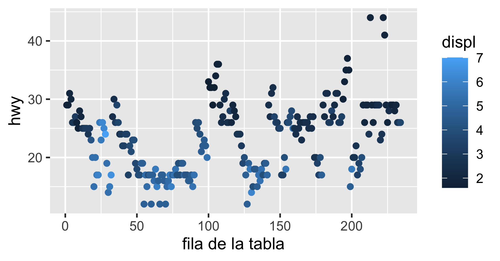
Tema 04
Visualización con ggplot2
Introducción a R · Ciencias Médicas, Odontológicas y de la Salud
UNAM · Semestre 2027-1 · Modalidad en línea
Ing. Luis Alberto Meza Cova
LABBIC — INER
Antes de empezar
Objetivo de la sesión
Construir una gráfica por capas —datos, estéticas, geometría, facetas, etiquetas, escalas y tema— y explicar qué hace cada capa; y reconocer cuándo el problema no es la gráfica sino la forma de la tabla.
El caso: los mismos datos, dos gráficas
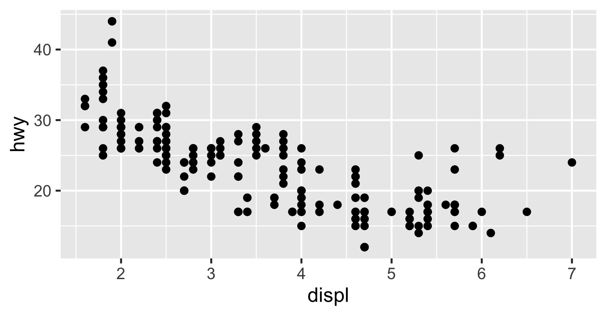
Las dos son de puntos. Lo que cambia es qué variable va a qué propiedad visual.
Qué es ggplot2
Ya lo instalaste en la sesión 01
De dónde viene
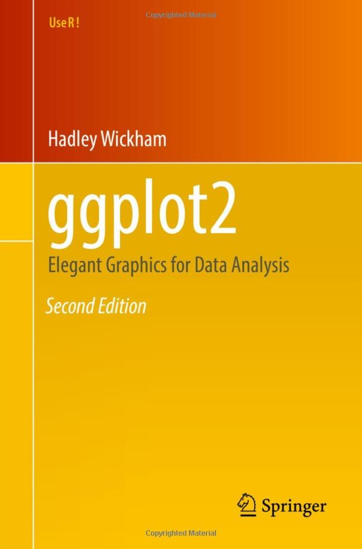
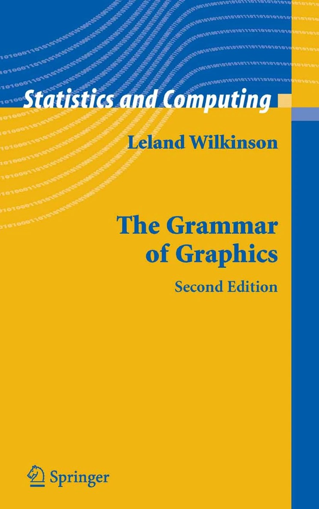
- ggplot2 lo escribió Hadley Wickham
- Se inspira en The Grammar of Graphics, de Leland Wilkinson
- La idea: un sistema más flexible, potente y elegante que una lista de gráficos
Portadas: Springer · ggplot2, 2.ª ed. (2016) · The Grammar of Graphics, 2.ª ed. (2005)
El problema del catálogo
La mayoría del software de gráficas te ofrece un catálogo: barras, pastel, dispersión, líneas. Eliges uno.
- Siempre se queda corto. La lista tendrá menos opciones de las que la gente necesita
- No tiene una estructura por debajo. Cada «tipo de gráfico» es un caso especial, así que el programa es difícil de extender
El problema no es que falten tipos: «tipo de gráfico» no es la unidad correcta.
¿Qué es ggplot2?
Un paquete de R para crear gráficos estadísticos. Se basa en una gramática de los gráficos: en lugar de elegir un gráfico de una lista, lo compones pieza por pieza.
- Un idioma no tiene un catálogo de frases: tiene palabras y reglas
- Una gráfica no tiene un catálogo de tipos: tiene componentes y reglas
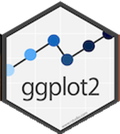
Tello, V. B. (2023, 23 de marzo). Gráficos con ggplot2. RPubs — https://rpubs.com/Vtello/1020960
Piensa en capas
- Empiezas con los datos
- Añades una capa que los representa: puntos, barras
- Añades otra con un resumen estadístico: una línea de tendencia
- Añades otra con anotaciones y títulos
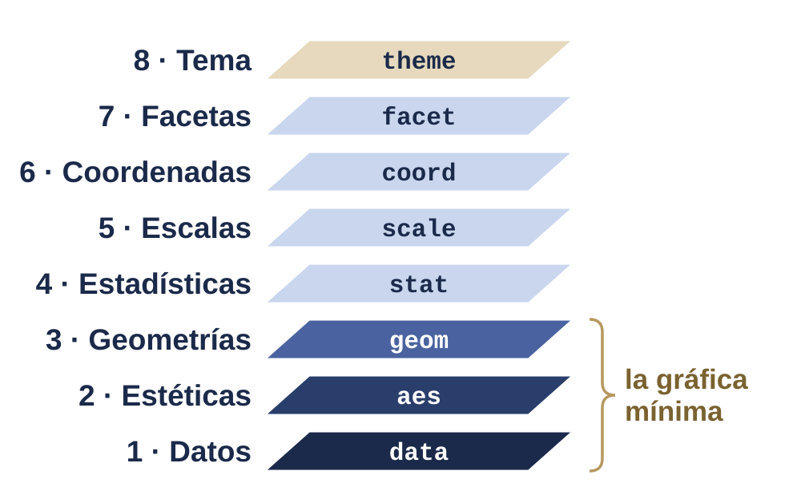
Pasos: Tello (2023), RPubs · figura propia del curso
Las ocho piezas
| # | Componente | Responde |
|---|---|---|
| 1 | data | ¿qué tabla? |
| 2 | aes | ¿qué variable a qué propiedad visual? |
| 3 | geom | ¿qué objeto se dibuja? |
| 4 | stat | ¿qué se calcula antes de dibujar? |
| 5 | scale | ¿cómo se traduce el dato al valor visual? |
| 6 | coord | ¿en qué sistema de coordenadas? |
| 7 | facet | ¿se parte en paneles? |
| 8 | theme | ¿qué aspecto tiene lo que no son datos? |
Tello (2023), RPubs
Una gráfica es una traducción
De tus datos, a las propiedades visuales (estéticas) de lo que ves (geometrías).
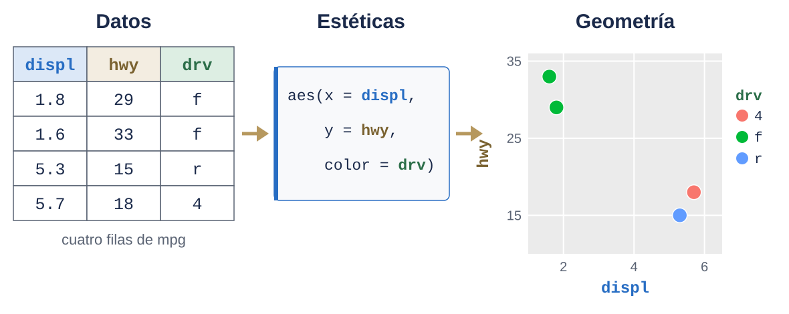
Figura propia del curso, con cuatro autos de mpg · idea: Engheim, E. (2020). Plotting and Graph Terminology. Medium
R base contra ggplot2
Dos formas de dibujar
| Gráficos base de R | ggplot2 | |
|---|---|---|
| Cómo se construye | dibujando encima | componiendo capas |
| Modificar lo dibujado | no se puede | se cambia la capa |
| Leyendas | a mano | automáticas |
| El objeto | no existe: es tinta | es un objeto de R |
Una línea y ya hay gráfica
Por grupo, y dos variables
Personalizar en R base
Un color por grupo, a mano
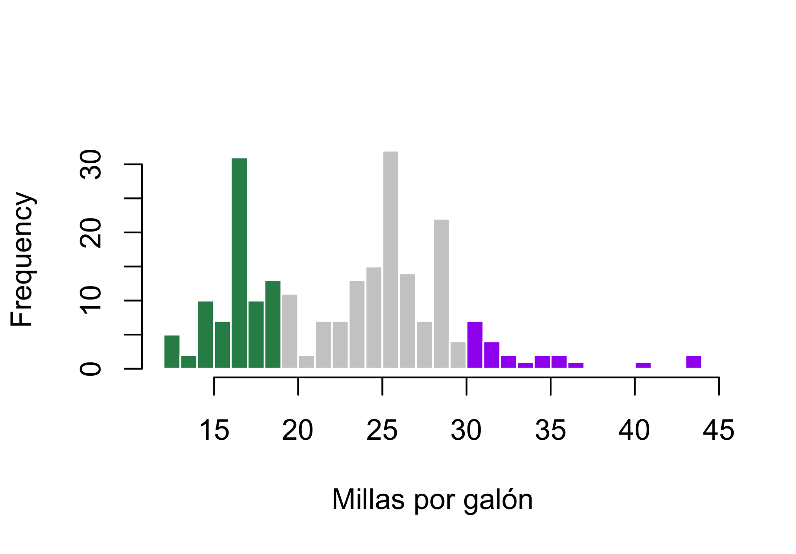
Idea adaptada de The R Graph Gallery — https://r-graph-gallery.com
Datos ordenados
Para ggplot2, datos ordenados
ggplot2 es parte del tidyverse: paquetes que guardan los datos de la misma forma, los datos ordenados (tidy data):
- Cada variable forma una columna
- Cada observación forma una fila
- Cada valor está en su propia celda
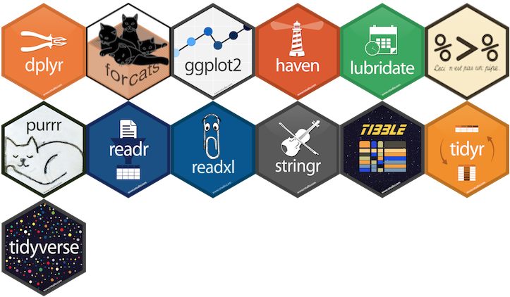
Hexágonos: Posit, CC0 — https://github.com/rstudio/hex-stickers
La misma medición, dos formas
Ancha: la presión en dos columnas
| id | pa1 | pa2 |
|---|---|---|
| A | 100 | 120 |
| B | 140 | 115 |
| C | 120 | 125 |
Larga: cada medición es una fila
| id | medicion | valor |
|---|---|---|
| A | pa1 | 100 |
| A | pa2 | 120 |
| B | pa1 | 140 |
| B | pa2 | 115 |
| C | pa1 | 120 |
| C | pa2 | 125 |
Los datos de hoy: mpg
234 autos y 11 variables, dentro de ggplot2. Las que usamos:
| Columna | Qué es |
|---|---|
displ |
cilindrada, en litros |
cty |
rendimiento en ciudad, en millas por galón |
hwy |
rendimiento en carretera, en millas por galón |
cyl |
número de cilindros |
drv |
tracción: 4 (4×4), f (delantera), r (trasera) |
class |
tipo de vehículo: compact, suv, pickup… |
year |
año del modelo: 1999 o 2008 |
Practica · conoce mpg
- Abre la ayuda con
?mpg. ¿De dónde salen los datos? - Corre
dim(mpg)yhead(mpg). ¿Cuántas filas y columnas tiene? - Con
table(mpg$drv), ¿cuántos autos hay de cada tracción? - ¿Qué clase de vehículo tiene menos autos?
Estéticas y geometrías
El mapeo de estéticas
Una estética es una propiedad visual que puede controlar una variable de tus datos. Es el cómo se va a representar la información: se declara con aes().
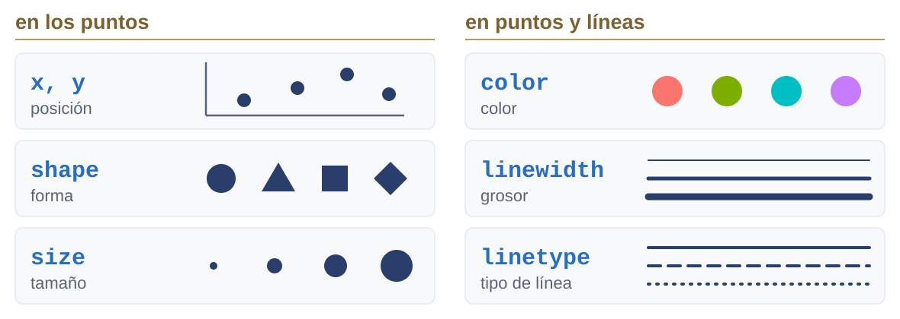
Figura propia del curso · idea: Wilke, C. O. (2019). Fundamentals of Data Visualization, fig. 2.1
Categórica o numérica
Una forma no puede ser continua
Error in `geom_point()`:
! Problem while computing aesthetics.
ℹ Error occurred in the 1st layer.
Caused by error in `scale_f()`:
! A continuous variable cannot be mapped to the shape aesthetic.
ℹ Choose a different aesthetic or use `scale_shape_binned()`.Mapear no es fijar

El error más común de todos
Esto no pinta de azul: mapea al color un texto, "blue", y le dibuja su leyenda.
Estéticas que existen
| Estética | Qué controla | Sirve para |
|---|---|---|
x, y |
posición | cualquier variable |
color |
color del punto o de la línea | categorías o números |
fill |
color de relleno | barras, cajas, áreas |
size |
tamaño | números |
shape |
forma del punto | categorías, pocas |
alpha |
transparencia | nubes densas |
linetype |
tipo de línea | categorías, pocas |
Las geometrías
Un geom es el objeto geométrico que representa los datos, y se añade con +. Datos + estéticas + geometría = una gráfica completa.
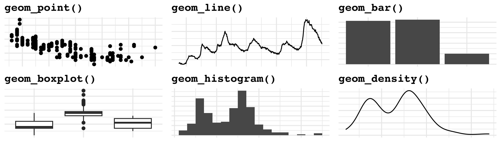
Cuál geometría, para qué
| Geom | Dibuja | Necesita |
|---|---|---|
geom_point() |
puntos | x, y |
geom_line() |
líneas | x, y |
geom_bar() |
barras — cuenta | x |
geom_col() |
barras — usa el valor | x, y |
geom_histogram() |
histograma | x |
geom_boxplot() |
cajas y bigotes | x categórica, y |
geom_smooth() |
tendencia | x, y |
geom_bar() cuenta filas; geom_col() usa el número que le das.
La gráfica, capa por capa
Una gráfica guardada en una variable
A la base, una capa de puntos
Y otra de suavizado
Practica · ciudad y carretera
Antes de graficar: ¿cómo describirías la relación entre cty y hwy?
Una recta sobre la nube
Mapear y fijar en la misma capa
Dónde va el aes()
- Las dos primeras dan el mapeo por defecto de todas las capas
- La tercera solo aplica a esa capa
Practica · tu primera gráfica
- Dispersión de
displ(eje x) contrahwy(eje y) - Colorea los puntos según
drv - Añade una recta con
geom_smooth(method = "lm") - ¿Sale una recta o tres? Mueve
color = drval otroaes()y compara - ¿Cómo describirías la relación entre la cilindrada y el rendimiento?
Practica · respuestas
Facetas
¿Qué es una faceta?
Una faceta toma una sola gráfica y la divide en paneles, uno por grupo.
¿Qué es una faceta?
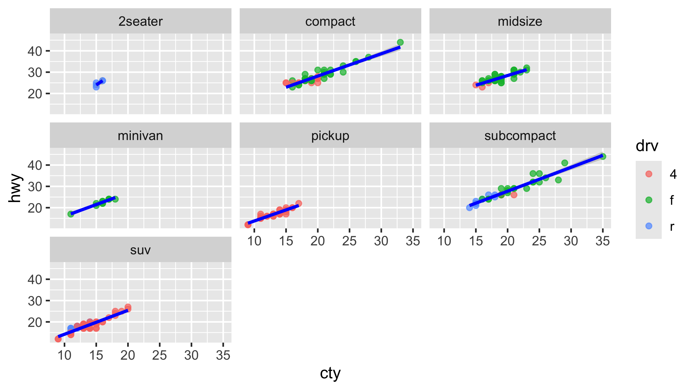
Dos variables: filas y columnas
Dos variables: filas y columnas
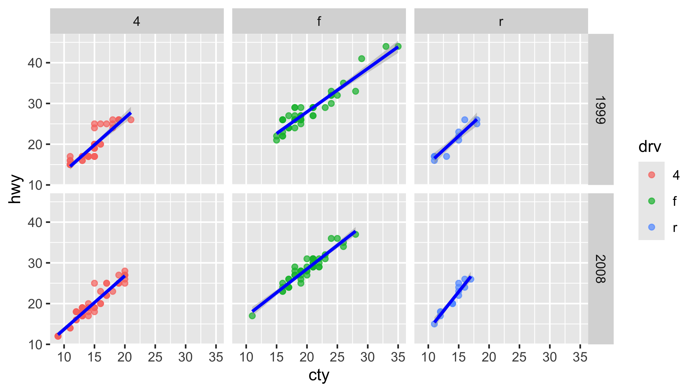
Color o faceta: no es lo mismo
Colorear por drv |
Facetar por drv |
|
|---|---|---|
| Los grupos están | superpuestos | separados |
| Comparar entre grupos | fácil | cuesta más |
| Ver la forma de cada grupo | cuesta si se enciman | fácil |
| Con muchas categorías | ilegible | sigue funcionando |
No hay una que sea mejor: hay una que responde tu pregunta.
Practica · facetas
- Toma tu gráfica de
displcontrahwyy añade una capafacet_wrap(~ drv) - ¿Qué diferencias observas entre los grupos?
- Cambia a
facet_grid(drv ~ cyl). ¿Por qué hay paneles vacíos?
Practica · respuestas
Etiquetas, escalas y tema
Títulos y anotaciones con labs()
Las etiquetas son todo el texto que le da contexto a una gráfica:
- título y subtítulo
- los nombres de los ejes x e y
- el título de cada leyenda: de color, tamaño, forma…
- una nota al pie o la fuente (caption)
cty y hwy son nombres de columna, no etiquetas: una gráfica que sale del archivo de trabajo siempre lleva labs().
labs() en código
labs() en código
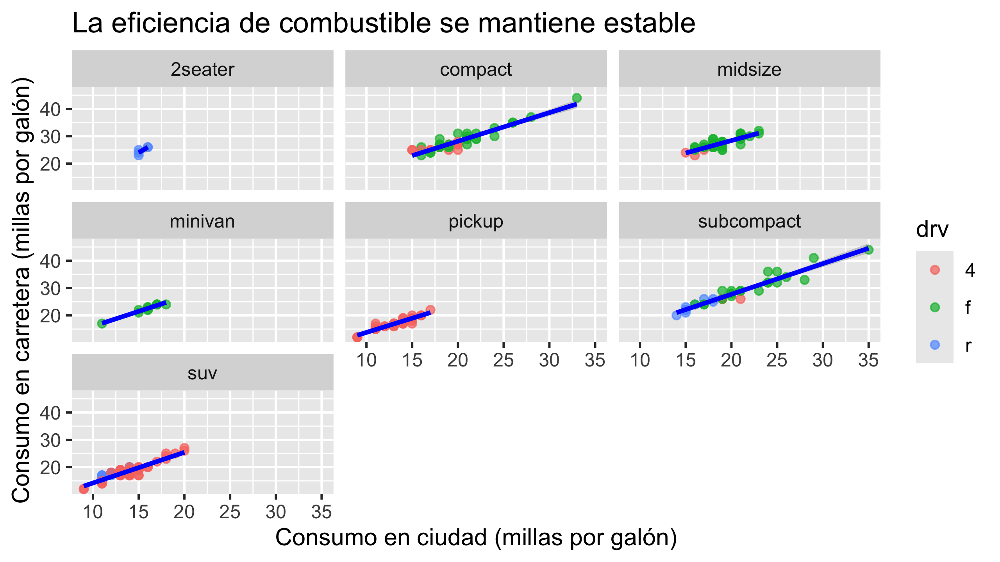
Escalas
Una escala es la regla que convierte tus datos en lo que ves: controla el cómo del mapeo que definiste en aes().
- Siempre hay una escala. Si no la escribes, ggplot2 pone una por defecto
- Escribirla es sustituir la predeterminada, no añadir algo nuevo
Practica · escalas
Mejora tu última gráfica, g:
- Con
scale_color_manual(), asigna los colores"red","blue"y"green"a los tipos de tracción - Con
scale_y_continuous(), haz que el eje y vaya de 0 a 50 - Ponle a la leyenda el título «Tipo de tracción»
Practica · respuestas
Practica · respuestas
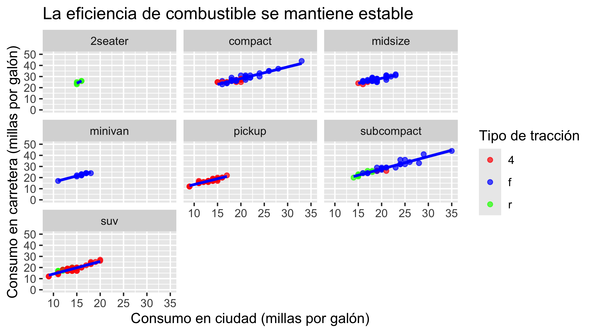
Una paleta que sí se distingue
Una paleta que sí se distingue
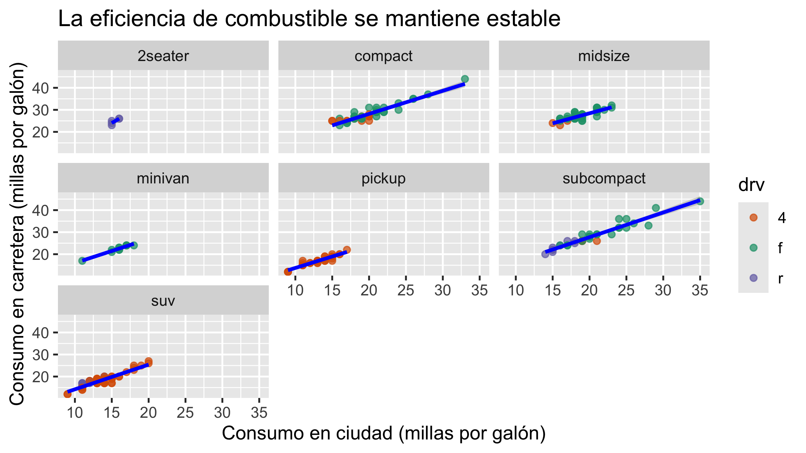
Tema: todo lo que no son datos
- El tema ajusta la estética general: fondo, cuadrícula, tipografía y posición de la leyenda
- No controla los colores de los datos: eso son las escalas
La gráfica completa
ggplot(data = mpg) + # data
aes(x = cty, y = hwy) + # aes
geom_point(aes(color = drv), alpha = 0.7) + # geom
geom_smooth(method = "lm", color = "black", se = FALSE) + # geom y stat
facet_wrap(~ class) + # facet
labs(title = "Relación cty vs. hwy por clase de vehículo",
x = "Consumo en ciudad (millas por galón)",
y = "Consumo en carretera (millas por galón)",
color = "Tipo de tracción") + # etiquetas
scale_color_manual(values = colores) + # scale
scale_x_continuous(breaks = seq(10, 40, by = 5)) + # scale
theme_light() # themeLa gráfica completa
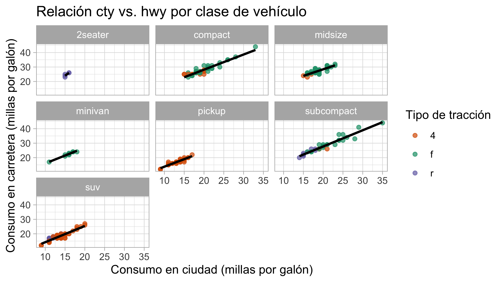
Guardar la figura
- Guarda la última gráfica que se mostró
widthyheightfijan el tamaño;dpi = 300es lo que suelen pedir las revistas- Con la extensión eliges el formato:
.png,.pdf,.svg
Con datos clínicos
Practica · tu figura con datos clínicos
- Dispersión de
lwt(eje x) contrabwt(eje y), coloreada porsmoke. ¿Qué leyenda sale? - Convierte
smokeen factor con las etiquetas «no fumó» y «fumó», y vuelve a graficar - Añade una recta por grupo, títulos en español y un tema limpio
Practica · respuestas
Practica · respuestas
Practica · respuestas
Practica · respuestas
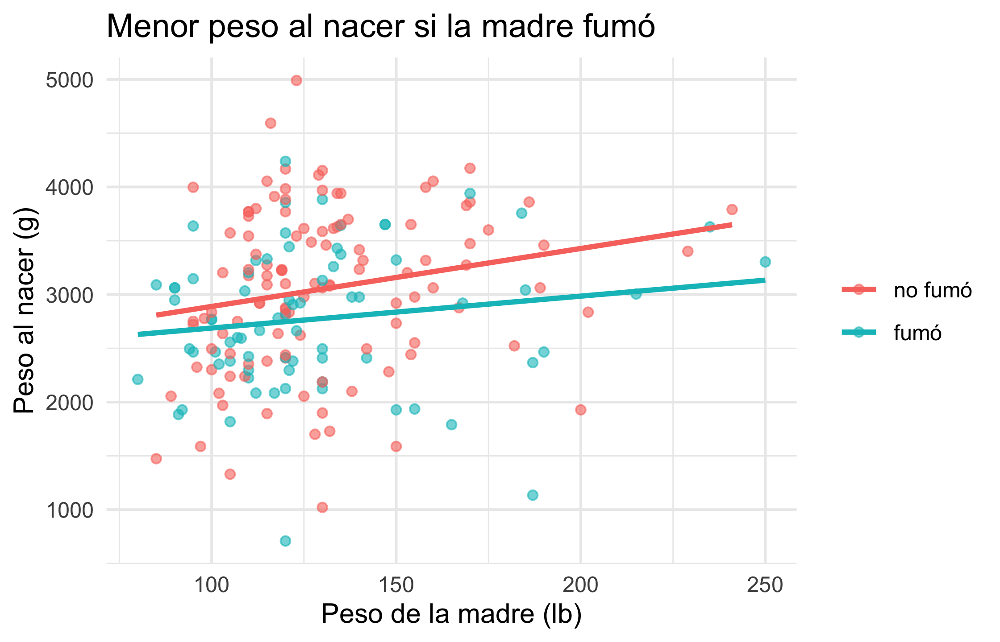
Cierre
Lo que te llevas de hoy
- Una gráfica es una traducción de variables a propiedades visuales
- Datos + estéticas + geometría ya es una gráfica; lo demás es refinar
- Dentro de
aes()van variables; fuera, valores - Colorear y facetar responden preguntas distintas
- Si la gráfica no sale, sospecha de la forma de la tabla antes que del código
De la sesión 01 a la 04
| Sesión | La idea que queda |
|---|---|
| 01 | R no vale porque calcule: vale porque deja escrito cómo calculó |
| 02 | La estructura no es pulcritud: es lo que permite el paso siguiente |
| 03 | Elegir el tipo de gráfico es la tercera pregunta, no la primera |
| 04 | No elijas un gráfico de un catálogo: compón el que responde tu pregunta |
Las cuatro son la misma idea: el procedimiento importa tanto como el resultado.
A dónde seguir
| Si quieres… | Ve a |
|---|---|
| profundizar en ggplot2 | ggplot2: Elegant Graphics for Data Analysis — https://ggplot2-book.org |
| manipular tablas | R for Data Science, capítulos de dplyr y tidyr — https://r4ds.hadley.nz |
| ideas con su código | The R Graph Gallery — https://r-graph-gallery.com |
| una hoja de referencia | las cheatsheets de Posit — https://posit.co/resources/cheatsheets/ |
Introducción a R · Maestría en Ciencias Médicas, UNAM · LABBIC-INER · 2027-1